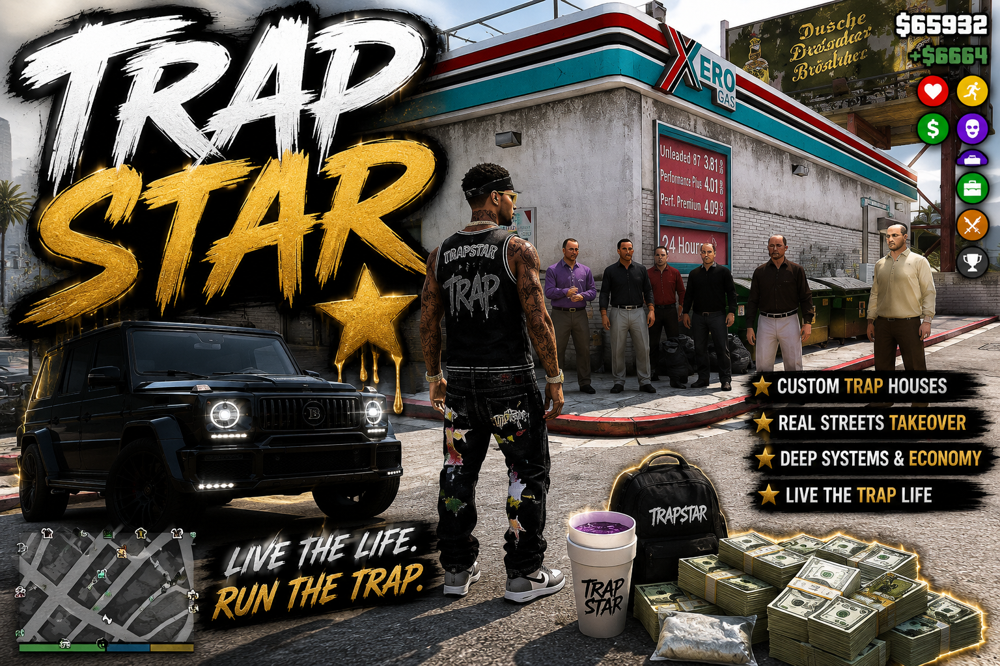

01
Drugs · territory · crews
TrapStar
Build it from a hand-to-hand sale into a citywide operation.
Find plugs. Test purity. Stock traps. Put runners on corners and collect what they earn. Then deal with raids, droughts, funerals, collectors, rivals, and the case being built against you.
- Live street customers and autonomous runners
- Supply chain, stash houses, fronts, and laundering
- Protection rackets, chop board, and rival crews
- Kingpin and Drought play modes

OPERATION7 corners activeHeat is moving east